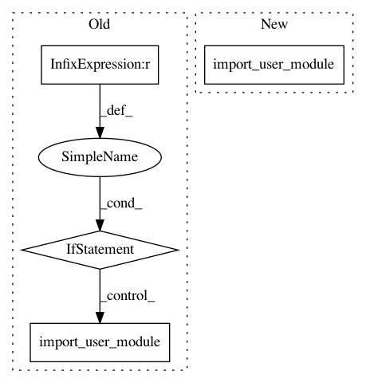

7853818c2e33a63ec17a31bcfe20e4fc75d94130,fairseq/options.py,,get_parser,#Any#Any#,124
Before Change
usr_parser.add_argument("--user-dir", default=None)
usr_args, _ = usr_parser.parse_known_args()
if usr_args.user_dir is not None:
import_user_module(usr_args.user_dir)
parser = argparse.ArgumentParser()
// fmt: off
parser.add_argument("--no-progress-bar", action="store_true", help="disable progress bar")
parser.add_argument("--log-interval", type=int, default=1000, metavar="N",
After Change
usr_parser = argparse.ArgumentParser(add_help=False)
usr_parser.add_argument("--user-dir", default=None)
usr_args, _ = usr_parser.parse_known_args()
import_user_module(usr_args)
parser = argparse.ArgumentParser()
// fmt: off
parser.add_argument("--no-progress-bar", action="store_true", help="disable progress bar")
In pattern: SUPERPATTERN
Frequency: 3
Non-data size: 4
Instances
Project Name: elbayadm/attn2d
Commit Name: 7853818c2e33a63ec17a31bcfe20e4fc75d94130
Time: 2019-01-16
Author: davide.caroselli@translated.net
File Name: fairseq/options.py
Class Name:
Method Name: get_parser
Project Name: dpressel/mead-baseline
Commit Name: 0967455056ccaad3d123ba42501487f82c4489f8
Time: 2019-04-01
Author: blester125@users.noreply.github.com
File Name: python/baseline/services.py
Class Name: Service
Method Name: _create_remote_model